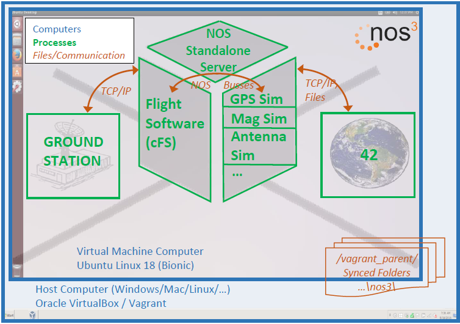

STF - 검증 및 검증(Verification and Validation, V&V) 계획
1 소개
이 검증 및 검증(V&V) 계획은 NASA Operational Simulator for Space Systems(NOS3)와 그 설계 기준 임무인 Simulation to Flight(STF)에 적용됩니다. NOS3에 대한 더 자세한 내용은 Read the Docs 위키와 3절에 설명되어 있습니다.
1.1 목적과 범위
NOS3는 소프트웨어 개발, 통합 및 테스트(I&T), 임무 운영/훈련, 검증 및 검증(V&V), 소프트웨어 시스템 점검 등의 영역을 지원하기 위해 NASA의 Katherine Johnson Independent Verification and Validation(IV&V) Facility에서 개발한 도구 모음입니다. NOS3는 소프트웨어 개발 환경, 다중 타깃 빌드 시스템, 운영자 인터페이스/지상국, 동역학 및 환경 시뮬레이션, 그리고 우주선 하드웨어의 소프트웨어 기반 모델을 제공합니다. NOS3는 다양한 사용 사례가 시연되는 STF라는 예시 임무 구현체를 제공합니다.
이 계획의 목적은 요구사항 준수를 확립할 활동(검증, verification)을 식별하고, 시스템이 고객의 기대에 부합함을 확립하는 것(검증, validation)입니다.
1.2 책임과 변경 권한
NASA Independent Verification and Validation(IV&V) 소속 Jon McBride Software Testing and Research(JSTAR) 팀이 이 계획의 유지 관리를 담당합니다. 이 그룹은 이 계획에 대한 변경 사항을 승인할 권한을 가집니다.
2 적용 문서 및 참조 문서
2.1 적용 문서
2.2 참조 문서
2.3 우선순위
충돌이 발생하는 경우, 적용 문서가 이 문서보다 우선합니다. 이 문서는 참조 문서보다 우선합니다.
3 시스템 설명
3.1 시스템 요구사항 전개(Flowdown)
이 시스템의 요구사항은 운영 개념/아키텍처, 사용자 매뉴얼 및 개발자 가이드, 그리고 요구사항 문서로부터 나옵니다.
3.2 시스템 아키텍처
NOS는 위성과 그것을 제어하는 데 사용되는 운영 지상 시스템의 완전한 모델을 제공합니다. 이 위성 모델은 위성 비행 소프트웨어의 개발을 가능하게 합니다. 이 모델에는 태양 센서, 스타 트래커, 추력기, 페이로드 등 위성 상의 다양한 하드웨어 구성 요소를 위한 시뮬레이터가 포함되어 있습니다. 아래 다이어그램은 NOS 아키텍처를 나타냅니다.

이 시스템의 시스템 아키텍처에 대한 자세한 내용은 운영 개념/아키텍처 문서에서 확인할 수 있습니다.
4 검증 및 검증(V&V) 프로세스
4.1 검증 및 검증(V&V) 관리 책임
NASA IV&V JSTAR 팀이 NOS의 검증 및 검증(V&V)을 담당합니다.
4.2 검증 및 검증(V&V) 방법
4.2.1 분석 (Analysis)
분석: 계산된 데이터나 하위 시스템 구조의 최종 제품 검증(validation)에서 도출된 데이터를 기반으로, 설계가 요구사항을 충족하는지 예측하기 위한 수학적 모델링 및 분석 기법의 사용.
4.2.2 검사 (Inspection)
검사: 완성된 최종 제품에 대한 육안 검사. 검사는 일반적으로 물리적 설계 특징이나 특정 제조사 식별 정보를 검증하는 데 사용됩니다. 예를 들어, 안전 아밍 핀(arming pin)에 검은 글씨로 “비행 전 제거(Remove Before Flight)”라고 스텐실로 인쇄된 빨간 깃발이 있어야 한다는 요구사항이 있다면, 아밍 핀 깃발에 대한 육안 검사를 통해 이 요구사항이 충족되었는지 판단할 수 있습니다.
4.2.3 시연 (Demonstration)
시연: 최종 제품의 사용이 개별적으로 명시된 요구사항(검증, verification)이나 이해관계자의 기대(검증, validation)를 달성함을 보여주는 것. 이는 일반적으로 성능 능력에 대한 기본적인 확인이며, 상세한 데이터 수집이 없다는 점에서 테스트와 구분됩니다. 시연에는 물리적 모델이나 모형(mock-up)의 사용이 포함될 수 있습니다. 예를 들어, 모든 조종 장치가 조종사의 손에 닿아야 한다는 요구사항은 조종석 모형이나 시뮬레이터에서 조종사가 비행 관련 작업을 수행하도록 함으로써 검증될 수 있습니다. 시연은 또한 시스템 성능의 극한 한계에서 운용할 수 있는 능력을 보여주는 일회성 이벤트를 수행하는 테스트 파일럿과 같은, 고도로 숙련된 인력이 실제로 최종 제품을 운용하는 것일 수도 있습니다.
4.2.4 테스트 (Test)
테스트: 성능을 검증(verify)하거나 검증(validate)하기 위한 상세 데이터를 얻거나, 추가 분석을 통해 성능을 검증(verify)하거나 검증(validate)하기에 충분한 정보를 제공하기 위해 완성된 최종 제품을 사용하는 것.
5 검증 및 검증(V&V) 구현
5.1 시스템 설계와 검증 및 검증(V&V) 흐름
구성 요소 개발의 일반적인 흐름은 다음과 같습니다:
점검용(checkout) 애플리케이션 개발
점검용 애플리케이션을 이용한 시뮬레이터 개발 및 테스트
점검용 애플리케이션의 코드를 재사용하는 비행 소프트웨어 개발
지상 소프트웨어 명령 및 텔레메트리 데이터베이스 개발
지상 소프트웨어 및 시뮬레이터를 이용한 비행 소프트웨어 테스트
지상 소프트웨어 및 실제 하드웨어를 이용한 비행 소프트웨어 테스트
5.2 테스트 대상물 (Test Articles)
비행 소프트웨어 소스 코드가 테스트 대상물입니다. 이는 실제로 비행에 사용될 소프트웨어이지만 리눅스 환경용으로 다시 컴파일된 것입니다. 또한, 비행 소프트웨어의 명령 및 제어에 사용되는 지상 소프트웨어의 명령 및 텔레메트리 데이터베이스도 테스트 대상물로 취급될 수 있습니다.
5.3 지원 장비 (Support Equipment)
NOS 시스템에는 지상 소프트웨어 시스템인 AMMOS(Advanced Multi-Mission Operations System) Instrument Toolkit(AIT), COSMOS, OpenC3, 또는 YAMCS(Yet Another Mission Control System)와 42 동역학 소프트웨어가 필요합니다. 또한, 테스트 대상 구성 요소들의 시뮬레이션이 테스트를 위해 필요합니다.
5.4 시설 (Facilities)
모든 하드웨어가 소프트웨어로 시뮬레이션되므로 NOS 검증 및 검증(V&V)에는 특별한 시설이 필요하지 않습니다. git, Vagrant, VirtualBox가 설치된 표준 엔지니어링 노트북이면 NOS 검증 및 검증(V&V)을 수행하기에 충분합니다. 실제 하드웨어를 이용한 테스트의 경우, 지상 소프트웨어는 노트북에서 실행되며 그 노트북은 무선 또는 유선 연결을 통해 실제 하드웨어에 연결됩니다.
6 시스템 검증 및 검증(V&V)
6.1 완전한 시스템 통합
NOS는 전체 시스템에 대해, 또는 구성 요소별로 비행 및 지상 소프트웨어의 검증 및 검증(V&V)을 수행하는 데 사용될 수 있습니다.
6.1.1 개발/엔지니어링 유닛 평가
NOS는 주로 개발용 또는 엔지니어링용 유닛에 대한 평가를 수행할 필요성을 없애줍니다. 이는 리눅스용으로 재컴파일된 실제 비행 코드를 평가할 수 있는 능력을 제공합니다.
6.1.2 검증(Verification) 활동
6.1.2.1 검증 테스트
테스트가 주된 검증 방법이 될 것입니다. 가능한 한 UT-Assert 프레임워크를 사용해 자동화되어야 하며, 가능하다면 합격/불합격(pass/fail) 결과를 제공해야 합니다.
6.1.2.2 검증 분석
소프트웨어의 올바른 동작을 검증하기 위해 더 깊은 분석이 필요한 경우 분석이 사용될 것입니다.
6.1.2.3 검증 검사
검사는 거의 사용되지 않을 것입니다.
6.1.2.4 검증 시연
단순한 합격/불합격 기준이 없는 더 큰 종단 간(end-to-end) 유형의 요구사항을 검증하기 위해 필요한 경우 시연이 사용될 것입니다.
6.1.3 검증(Validation) 활동
6.1.3.1 테스트를 통한 검증(Validation)
테스트가 주된 검증(validation) 방법이 될 것입니다. 가능한 한 UT-Assert 프레임워크를 사용해 자동화되어야 하며, 가능하다면 합격/불합격 결과를 제공해야 합니다.
6.1.3.2 분석을 통한 검증(Validation)
소프트웨어의 올바른 동작을 검증(validate)하기 위해 더 깊은 분석이 필요한 경우 분석이 사용될 것입니다.
6.1.3.3 검사를 통한 검증(Validation)
검사는 거의 사용되지 않을 것입니다.
6.1.3.4 시연을 통한 검증(Validation)
단순한 합격/불합격 기준이 없는 더 큰 종단 간 유형의 시나리오를 검증(validate)하기 위해 필요한 경우 시연이 사용될 것입니다.
7 프로그램 검증 및 검증(V&V)
비행 소프트웨어와 지상 소프트웨어가 NOS 환경에서 검증되고 검증(validate)되고 나면, 비행 컴퓨터를 포함한 실제 비행 하드웨어에서도 검증되고 검증(validate)될 수 있습니다.
8 시스템 인증 산출물
검증 및 검증(V&V) 활동의 산출물에는 테스트 계획, 테스트 절차, 테스트 보고서, 그리고 완성된 요구사항 추적 매트릭스가 포함됩니다.
부록 A: 약어 및 축약어
AIT: AMMOS Instrument Toolkit
AMMOS: Advanced Multi-Mission Operations System
I&T: 통합 및 테스트 (Integration and Test)
IV&V: 독립 검증 및 검증 (Independent Verification and Validation)
JSTAR: Jon McBride Software Testing and Research
NOS3: NASA Operational Simulator for Space Systems
RTM: 요구사항 추적 매트릭스 (Requirements Traceability Matrix)
V&V: 검증 및 검증 (Verification and Validation)
YAMCS: Yet Another Mission Control System
부록 B: 용어 정의
검증(Validation, 제품에 대한): 이해관계자의 기대와 운영 개념에 근거하여 제품이 의도된 목적을 달성함을 입증하는 과정. 테스트, 분석, 시연, 검사의 조합으로 판단될 수 있습니다. (“내가 올바른 제품을 만들고 있는가?”라는 질문에 답합니다.)
검증(Verification, 제품에 대한): 사양(specification) 준수에 대한 증명. 검증은 테스트, 분석, 시연, 검사 또는 이들의 조합으로 판단될 수 있습니다. (“내가 제품을 올바르게 만들었는가?”라는 질문에 답합니다.)
부록 C: 요구사항 검증 매트릭스
추후 작성 (TODO)
부록 D: 검증(Validation) 매트릭스
추후 작성 (TODO)